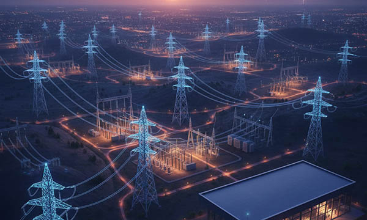

Power grids are the backbone of modern energy infrastructure, responsible for delivering electricity from power plants to households, industries, and commercial facilities. Across Germany, France, Italy, Switzerland, the United Kingdom, Norway, Austria, Poland, and the Benelux countries (Belgium, Netherlands, Luxembourg), reliable power transmission and distribution are essential for economic stability and daily life. Transmission lines, transformer stations, substations, and local distribution networks must operate seamlessly to maintain a continuous energy supply. The integration of renewable energy sources, such as wind and solar power, increases operational complexity and places higher demands on monitoring, safety, and structured workflows.
In such critical environments, clear and durable industrial signage is essential. Cable markers, warning signs, machine and transformer labels, QR code plates, safety decals, type plates, and directional signs help technicians navigate complex electrical systems and maintain operational efficiency. At SignXpert, we provide customized, high-performance labeling solutions specifically designed for power grid operators across Germany and Europe. Our products are engineered to withstand extreme conditions, including high voltage, moisture, UV radiation, vibration, and chemical exposure, while ensuring long-term visibility, safety, and regulatory compliance.
Installing Power Grid Infrastructure: Precision and Safety First
The installation of power grid systems requires meticulous planning and precise execution. In Germany, France, Italy, Switzerland, the UK, Norway, Austria, Poland, and the Benelux countries, every transformer, cable, switchgear, and control system must be correctly positioned and clearly marked. Small errors during installation can lead to serious operational risks or safety hazards.
Industrial signage plays a critical role during installation. Warning labels, high-voltage signs, cable identification markers, and directional signs create a structured and safe working environment for technicians. Proper labeling ensures that electrical and mechanical systems are immediately recognizable, reducing errors and improving efficiency during installation. In Germany and Austria, where compliance with EU safety standards is strictly monitored, clearly labeled high-voltage zones, transformer rooms, and control panels are mandatory. Poland, Norway, and the UK similarly rely on precise signage to prevent operational mistakes and maintain continuity. By integrating durable and clearly visible signage from the start, power grid installations operate more safely, efficiently, and reliably throughout Europe.
Operating Power Grids: Labeling for Safety, Reliability, and Efficiency
During daily operations, power grids are dynamic and high-risk environments. Technicians work with high-voltage systems, complex substations, and transmission lines that require constant monitoring and maintenance. Across Germany, France, Italy, Switzerland, the UK, Norway, Austria, Poland, and the Benelux countries, operational safety is a top priority. Proper labeling supports both safety and efficiency by making electrical components, cable routes, control panels, and hazard zones instantly recognizable.
Warning signs and safety decals alert staff to high-voltage areas, restricted access zones, and critical system components, while cable markers and type plates provide fast identification of circuits and electrical paths. Clear labeling reduces the risk of accidents, ensures compliance with EU regulations, and enables emergency teams to respond effectively during outages or technical issues. Durable industrial labels from SignXpert remain legible under extreme environmental conditions such as heat, UV exposure, moisture, and vibration, ensuring that all staff can navigate the facility safely and efficiently. By combining high-quality signage with structured workflows, power grid operators can maintain continuous energy supply and minimize operational risks.
Maintenance of Power Grids: Streamlined Processes Through Professional Signage
Regular maintenance is essential to keep power grid infrastructure safe and reliable. Valves, cables, transformers, switchgear, and substations must be routinely inspected, repaired, and updated to prevent downtime and ensure efficient energy distribution. In Germany, France, Italy, Switzerland, the UK, Norway, Austria, Poland, and the Benelux countries, clear and durable labeling simplifies maintenance processes and reduces the risk of human error.
Pipe markers, cable identification labels, safety signs, and operational instructions allow technicians to quickly locate the correct equipment and systems. Warning labels highlight hazardous areas, high-voltage zones, and chemical risks, ensuring that maintenance staff can work safely. High-performance engraved plates, stainless steel type plates, laminated safety decals, and UV-resistant signs provide long-lasting visibility and durability in harsh electrical environments. By investing in professional signage, power grid operators reduce maintenance time, enhance safety, and ensure uninterrupted energy supply across Europe. Proper labeling is essential for maintaining operational efficiency and supporting compliance with EU regulations and industry standards.
Why SignXpert is the Trusted Partner for Power Grid Signage in Germany and Europe
SignXpert is a leading provider of industrial signage and labeling solutions for power grid operators in Germany, France, Italy, Switzerland, the United Kingdom, Norway, Austria, Poland, and the Benelux countries. Our product range includes engraved type plates, safety decals, cable markers, warning labels, QR code asset tags, machine identification labels, and directional signs, all designed to withstand extreme environmental conditions.
With our online customization platform, power grid operators can design and order signage tailored to their specific operational requirements, ensuring precise placement, long-term durability, and regulatory compliance. Fast production and reliable delivery across Europe guarantee that operations continue without interruption. By choosing SignXpert, power grid facilities gain high-performance, durable, and fully customized labeling solutions that enhance safety, improve operational efficiency, support compliance, and contribute to reliable and structured power distribution across Germany and Europe.